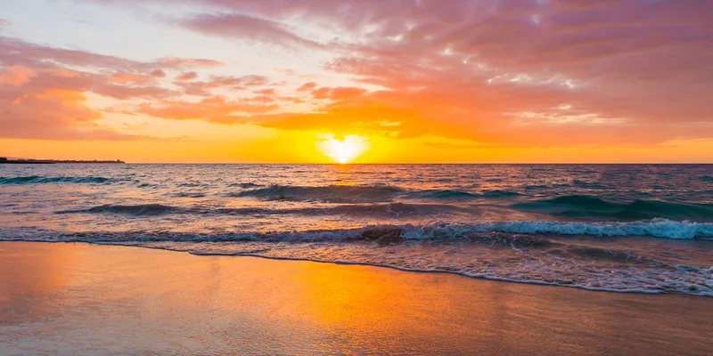
Type of Rentals

Honda Motor Scooters
- Honda Metropolitan (49cc) - 1 person.
- Honda Dio (110cc) - 2 person.
- Honda PCX150 (149cc) - 2 person.

ATV Side-by-Side
- Honda Pioneer 1000.
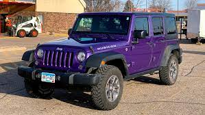
Jeep Rentals
- 4-door Jeep Wrangler - manual with A/C - 5 people max.
- 2-door Jeep Wrangler - open air - manual - 4 people max.
Weather in Cozumel
Temperature: °F
Description:
Humidity: %
| °F | °F | °F | °F | °F |
Our Tours
Mr. Sanchos Beach Club All-Inclusive Day Pass
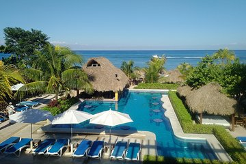
Enjoy great service and convenience that come with an all-inclusive day pass to Mr Sancho’s Beach Club in Cozumel. Lounge on the beach or swing on a hammock. Make use of a pool bar and beachfront section exclusive to all-inclusive day pass guests. All-you-can-eat delicious meals and bottomless drinks await you, making this the perfect vacation experience.
Cozumel Snorkeling Tour: Palancar, Columbia and El Cielo Reefs
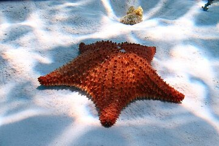
Whether you're an experienced snorkeler or an absolute beginner, fully trained guides let you make the most of Cozumel's famous reef on this half-day snorkeling tour. Hit three of the island's hottest snorkeling spots: Palancar Reef, Columbia Reef and Playa el Cielo, known for the starfish that decorate its white sands. Your package includes drinks and snorkeling gear; marine fees are payable in cash on the day.
Paradise Beach Exclusive All-Inclusive Day Pass
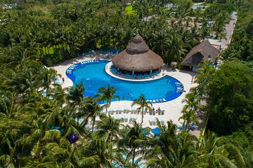
This all-inclusive pass to Paradise Beach lets you hang out all day at one of Cozumel’s best beach clubs. Lounge on chairs shaded by palm trees, grab lunch at an onsite restaurant or have lunch served to you on the beach, and drink your fill of domestic liquors, beers, and soft drinks from the open bar. It’s the perfect beach day—no planning required.
The Cozumel Turtle Sanctuary Snorkel Tour
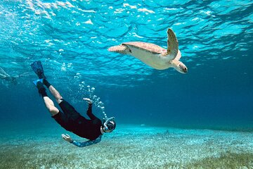
We're known for operating the best all-inclusive snorkel experiences on the island of Cozumel. Traveling to some of the most beautiful areas the Caribbean has to offer - including the famous 'El Cielo'. We aim to visit 3 or 4 different destinations during the tour to give you a taste of what our beautiful island has to offer. We provide everything you need to enjoy the tour with us, including freshly prepared Mexican snacks and ice-cold drinks. Just turn up and we'll take care of the rest! Note:Please arrive at least 40 minutes before your sailing time. All times shown are for Cozumel’s local timezone, which may differ to your cruise ship timezone. Check before booking.
Private Jeep & ATV Tour to Jade Cavern Cenote
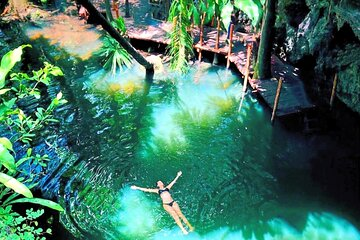
Take our all new Private Jeep & ATV with a family tour operator that has been in business for over 25 years. Not only do you get to snorkel, ride into the Jungle on an ATV to discover Jade Cavern (Cenote Chempita), snorkel & visit Punta Sur Park, this is a completely private tour. You won't have to share your vehicle or be flocked around like on the caravan tours, and get to discover Cozumel at your own pace. Also completely customizable. We have the #1 private tour guides, who speak fluent English and are featured in many of our 5 Star reviews. Our private guides are truly magnificent, and very knowledgeable about Cozumel Culture and history because they are natives to Cozumel, who grew up living this unique and fascinating culture and know everything first hand. INCLUDES A COOLER OF WATER & BEER, TRANSPORTATION FROM CRUISE PORT, RESORT/HOTEL & FERRY, PRIVATE GUIDE, ENTRANCES TO BELOW ATTRACTIONS, MEXICAN LUNCH & MUCH MORE!
Cozumel Submarine Experience
Submerge yourself in the crystal clear waters of the Caribbean in a state-of-the-art submarine on a submarine excursion from Cozumel. Dive to depths of 100 feet (30 meters) to discover the marine magnificence of the protected park, Chankanaab. Your journey upon the Atlantis Submarine takes you to the heart of Cozumel’s most colorful and captivating coral reef; marvel at troves of tropical fish as your knowledgeable guide provides insightful information on the fauna and flora.
El Cielo Snorkel by Private Boat
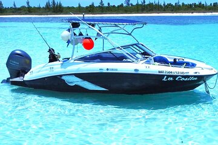
Feel the breeze while cruising along Cozumel's coastline onboard a private boat. Enjoy the comfort of our vessels and experience an unforgettable underwater adventure! Snorkeling in Cozumel is the favorite activity of the visitors to this Caribbean destination, as its crystal-clear waters attract experts and newbies alike. Our experienced and professional crew will gear you up and guide you in a two reefs stop trip. Admire lush marine life and stunning coral formations only found at this true snorkeling paradise. Taste a delicious fish ceviche and cold margaritas while you dip into the turquoise waters of Cozumel. Once your snorkeling is over, relax at a pristine secluded beach away from the crowds! Don’t miss out on this adventure and book it now!
Custom Private Cozumel Jeep Tour
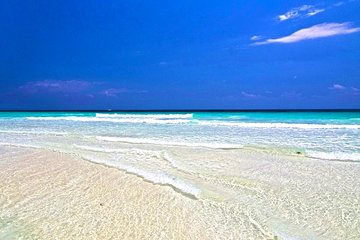
Explore Cozumel on an all-inclusive, half-day private Jeep tour. Design an itinerary that suits your interests, then relax and let your driver-guide chauffeur you to all the area’s highlights. Visit Punta Sur Ecological Park, snorkel among tropical fish and colorful reefs, wind your way through hidden caves, and even take an adventurous turn behind the wheel. Enjoy lunch, drinks, and pickup and drop-off included in the tour price.
Cozumel: Private VIP Tour by Van (up to 12 passengers)
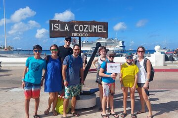
Discover the best that the island of Cozumel has to offer on this half-day sightseeing tour. With a private guide, create your own itinerary based on your group’s interests, or let your guide take you to the island’s top attractions. Some points of interest include the municipal market, the downtown area, the eastern part of the island, and Chankanaab Beach Park.
Invisible Boat Snorkeling Adventure in Cozumel
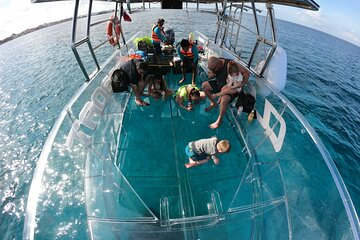
Admire the underwater wonderland of the Caribbean Sea without getting wet on an invisible boat tour. Unlike traditional glass-bottom boats, this vessel is entirely transparent, to enhance you views of marine life—you'll also have the chance to swim and snorkel in the water, which is home to a plethora of tropical fish. Plus, you can choose from several start times to suit your schedule